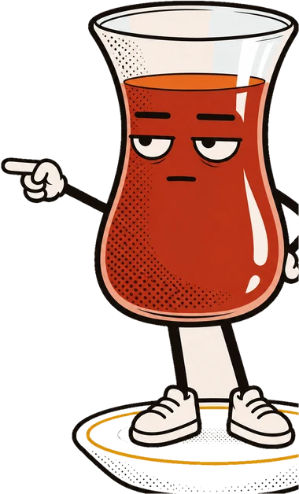
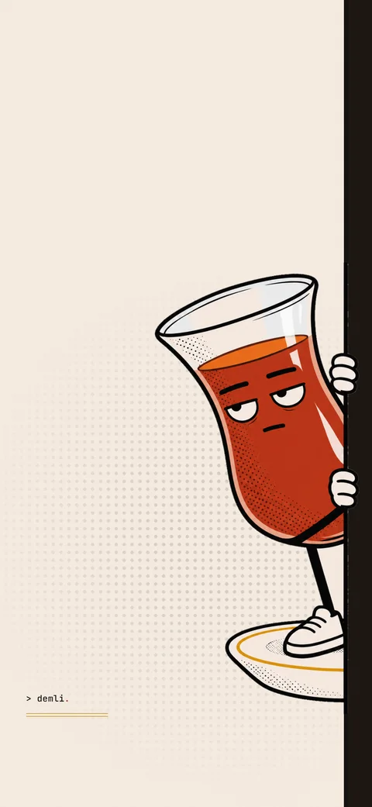

Kenardan
Sağdaki duvarın arkasından sakin sakin bakar. Sol taraf masaüstü ikonlarına boş kalır.
Masaüstü için üç boyut, telefon için iki. Ekranına uyanı indir; hepsi PNG ve ücretsiz. Yeni sahneler geldikçe buraya eklenir.

4K 3840×2160 · QHD 2560×1440 · Full HD 1920×1080
Sağdaki duvarın arkasından sakin sakin bakar. Sol taraf masaüstü ikonlarına boş kalır.
iPhone 1179×2556 · Android 1080×2400 · PNG

Demli parmağıyla kilit ekranındaki saati gösterir. Üst üçte bir saate boş.

ekranına uyan boyutu seç